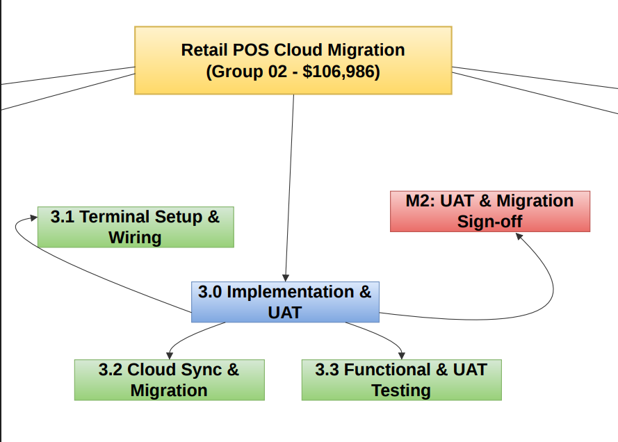

Retail POS Migration Project
Group 02 – BISY2004 Project Management, Assessment 2
3. Scope and Work Breakdown Structure
Scope statement
End-to-end cloud migration of point-of-sale systems, transaction databases and network hardware across five designated pilot retail locations. The work covers cloud licensing, legacy data auditing and migration, on-site terminal installation and wiring, network and security upgrades, user acceptance testing, staff training, and two weeks of post-go-live hypercare support, finishing with a signed handover to the Retail Operations Manager.
Deliverables
- NexisPOS Enterprise Cloud licence (one year, five stores).
- 15 Apex POS TouchTerminals installed and wired.
- Audited and migrated legacy transaction database.
- VLAN, router and LTE backup upgrades per store.
- Signed-off UAT results and certified store staff.
- Hypercare support and final handover pack.
Exclusions
- Rollout to non-pilot and franchise stores.
- Custom software development on the NexisPOS platform.
- Replacement of back-office ERP or accounting systems.
- Hardware for stockrooms or warehouse scanning.
Work breakdown structure
The project decomposes into five phases, 13 work packages and five deliverable milestones. Every work package has one accountable lead, so there is never a question about who reports its progress.
| WBS | Work package | Phase | Lead | Duration |
|---|---|---|---|---|
| 1.1 | Project Charter & Scope Sign-off | Governance | Saimoon Hasan | 3 days |
| 1.2 | NexisPOS Cloud Licensing Agreement | Procurement | Farhan Rohan | 3 days |
| 1.3 | Procurement of Apex POS TouchTerminals | Procurement | Zareen Orpa | 3 days |
| M1 | Apex POS Hardware Delivered & Accepted | Milestone | Zareen Orpa | 0 |
| 2.1 | Legacy Data Audit & Schema Mapping | Data engineering | Farhan Rohan | 4 days |
| 2.2 | NexisPOS Cloud Database Provisioning | Cloud infrastructure | Farhan Rohan | 4 days |
| 2.3 | Store Network & Security Upgrades (5 stores) | Security | Zareen Orpa | 5 days |
| 3.1 | On-site Apex POS Terminal Setup & Wiring | Infrastructure | Zareen Orpa | 5 days |
| 3.2 | Cloud Sync & Migration Execution | Migration | Farhan Rohan | 5 days |
| 3.3 | Functional & User Acceptance Testing | Testing and QA | Farhan & Ishita | 5 days |
| M2 | UAT & Data Migration Sign-off | Milestone | Farhan & Saimoon | 0 |
| 4.1 | Store Manager & Cashier Training (5 stores) | Training | Ishita | 5 days |
| 4.2 | Dry-Run Operations & Shift Simulations | Testing | Ishita | 4 days |
| M3 | Staff Readiness Certification | Milestone | Ishita | 0 |
| M4 | Pilot Stores Cloud Migration Go-Live | Milestone | Farhan & Zareen | 0 |
| 5.1 | Post Go-Live Support & Hypercare | Support | Ishita & Farhan | 6 days |
| 5.2 | Project Final Review & Handover | Closure | Saimoon Hasan | 2 days |
| M5 | Project Closure Completed | Final milestone | Saimoon Hasan | 0 |



How the WBS holds the project together
The same identifiers are reused in every other artefact. Work package 3.1 is task 3.1 in the ProjectLibre schedule and the card titled “3.1 On-site Apex POS Terminal Setup & Wiring” on the Trello board. That shared numbering is what makes a status report checkable: any card on the board can be traced back to a scheduled activity with a duration, a dependency and a named owner, and anything that cannot be traced that way is not project work.
Scope control
Scope was baselined at charter sign-off (WP 1.1) and frozen for the 28-day execution window. Variations followed one route:
- Raise. The change is logged as a Trello card in the Backlog list with a CR reference and the requesting stakeholder named.
- Assess. The Project Manager assesses cost, schedule and risk impact against the baseline and the $12,686 contingency.
- Decide. Changes inside contingency are approved by the Project Manager. Anything touching the budget ceiling or the 25 September deadline escalates to the Steering Committee.
- Record. Approved changes update the WBS register, the schedule and the budget log. Rejected ones are written into the enterprise rollout backlog rather than dropped.
Because the critical path carries zero float, the standing rule for the pilot was that no change adding duration to a critical activity could be approved inside the execution window. The change log shows that rule being applied: two changes approved, one deferred for exactly that reason.